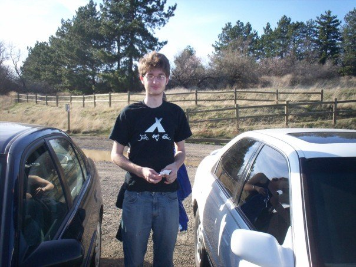
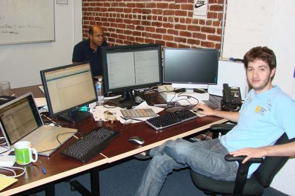
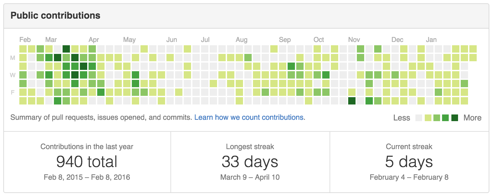

Whitman → Tech
February 9, 2016
Whitman College
Paul Carduner
Topics
- Who is this guy?
- So you want to work in tech?
- Career Progression
- Interview Demo
Who is this guy?
'05 → '07
(Pure) Math @ Whitman
'08 → '10
San Francisco Startups
'10 → '15

'15 → '??
"Unemployed Layabout"
So you want to work in tech?
The good news
Experience >> Pedigree
The bad news
Recruiters only look at top 10 CS schools
... and Harvard
So how do you get a job?
build
really good
open source
stuff
... And make friends
And when it comes to resumes...
github >> linkedin
bottom line
make yourself worth noticing
Career Progression
Junior Software Engineer
- work on individual tasks
- learn time management
- learn to work in a team
- tasks are assigned to you
- $80k+
Software Engineer
- work on whole features
- collaborate with other engineers
- make expedient technical decisions
- pick/prioritize your tasks
- $120k+
Senior Software Engineer
- lead projects
- collaborate with other business functions
- mentor other engineers
- decide project timeline and deliverables
- $150k+
Principal Software Engineer
- lead an engineering team
- determine long term technical direction
- solve the problems others can't
- decide what everyone works on
- $180k+
When do liberal arts fit in?
- Communication Skills
- Cross-Domain Analytical Skills
Interview Demo
Anagram Buckets
Write a function, which given a list of words, returns a list of lists where all the words in each sublist are anagrams of each other.
>>> bucketize(['star', 'car', 'arts', 'start', 'rats', 'arc'])
[['star', 'arts', 'rats'], ['car', 'arc'], ['start']]
Solution 0
def is_anagram(a, b):
frequencies = {}
for char in a:
if char in frequencies:
frequencies[char] += 1
else:
frequencies[char] = 1
for char in b:
if char in frequencies:
frequencies[char] -= 1
else:
return False
for count in frequencies.values():
if count != 0:
return False
return True
def bucketize(words):
buckets = []
for word in words:
found_bucket = False
for bucket in buckets:
if is_anagram(word, bucket[0]):
bucket.append(word)
found_bucket = True
break
if not found_bucket:
buckets.append([word])
return buckets
Solution 1
def bucketize(words):
buckets = {}
for word in words:
char_frequency = {}
for char in word:
if char in char_frequency:
char_frequency[char] += 1
else:
char_frequency[char] = 1
key = frozenset(char_frequency.items())
if key in buckets:
buckets[key].append(word)
else:
buckets[key] = [word]
return buckets.values()
Solution 2
def bucketize(words):
buckets = {}
for word in words:
key = tuple(sorted(word))
if key in buckets:
buckets[key].append(word)
else:
buckets[key] = [word]
return buckets.values()
Solution 3
def bucketize(words):
buckets = {}
for word in words:
key = tuple(radix_sort(word))
if key in buckets:
buckets[key].append(word)
else:
buckets[key] = [word]
return buckets.values()
Current Projects
WeScheme
- A scheme to javascript compiler written in javascript
- /bootstrapworld/wescheme-js
codemirror-blocks
- drag and drop code editor for functional programming languages
- /bootstrapworld/codemirror-blocks
Contact
- fb.com/pcardune
- paulcarduner@gmail.com